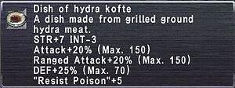

Level 75 reference · Zenith rules
|
Job: Notorious Monster |
 |

|
Zone |
Level |
Drops |
Steal |
Spawns |
Notes | ||||||
|
80 |
1 |
A, T(H) | |||||||||
| Nyzul Isle Investigation (Floor 60) | 1 | A, T(H) | |||||||||
| Nyzul Isle Investigation (Floor 80) | 1 | A, T(H) | |||||||||
| Nyzul Isle Investigation (Floor 100) | 1 | A, T(H) | |||||||||
|
HP = Detects Low HP; M = Detects Magic; Sc = Follows by Scent; T(S) = True-sight; T(H) = True-hearing JA = Detects job abilities; WS = Detects weaponskills; Z(D) = Asleep in Daytime; Z(N) = Asleep at Nighttime | |||||||||||

Notes:
- Spawns at (F-10); accessible only through Aydeewa Subterrane (exit 7 to Wajaom Woodlands on the map).
- Has "Draw In" capabilities.
- Very high regen with all three heads. Regen slows when heads are missing.
- It also appears to have some kind of TP Regen with 2 or 3 heads up. This goes away with only one head.
- 2 of the 3 heads of the Hydra can be killed.
- The Hydra regrows missing heads periodically; however, what exactly causes these heads to regrow is currently unknown.
- One theory is that regrowth can be triggered by weapon skills, elemental magic, or elemental additional effects on weapons.
- The Hydra's extra heads are removed by a specific unknown number of critical hits, including crits during a WS and crits that land for 0 (you CAN remove heads while the Hydra has Physical Shield up).
- The number required seems to increase dramatically when it enters "super mode" (see below).
- It seems to be resistant to piercing attacks. Sneak Attack can get around it.
- It has very high resistance to Stun and Enfeebling magic.
- Similar to Tiamat, upon dropping below 25% health it seems to enter something like a rage and this does not go away upon regening over 25%.
Special Attacks
- Trembling: 5' AoE 0-500 DMG Attack with additional effect of Dispel (10' range). Blinkable, wipes shadows.
- Barofield: ~15' AoE 100-200 DMG Wind Attack with additional effect of Gravity (10' range). Not Blinkable, ignores shadows. Damage greatly reduced by Baraera. Appears to be a cone-shaped attack centered around his center head.
- Serpentine Tail: Heavy damage single target or cone attack triggered when someone gets hate from behind.
- Used only when second (left) head is alive:
- Polar Blast: Ice-based Breath Attack, Paralyze effect
- Pyric Bulwark: Physical Shield - Not removable by Dispel and related effects
- Used only when third (right) head is alive:
Additional Information
Recently, the lone survivor of a missing volunteer unit returned to Al Zahbi with an unbelievable story of a three-headed dragon that attacked his companions while they were on a mission deep within the Wajaom Woodlands. Though they fought gallantly, their mauls and magicks were no match for the Tartarean wyrm's thick, squamous hide, and it was only a matter of moments before the mephitic miasma that poured from its gaping maws scorched the lungs of the ill-fated warriors.
While ancient tomes indicate that the Hydra is an independent beast that roams the outlands of its own will, the interrogation of a Mamool Ja spy revealed that the reptilian horde has been attempting to tame the dragon by luring it to their training grounds with the raw flesh of their prisoners. If they are successful in soothing the savage beast, they may soon learn a way to utilize it in battle, thus spelling doom for the Empire's armies. All high-level mercenaries are recommended to enroll immediately in eradication expeditions.
Adapted from Eden Wiki: Hydra (NM) · Contributors and history · CC BY-SA 4.0. Revision 1897. Layout, links and optional background text adapted for Zenith.